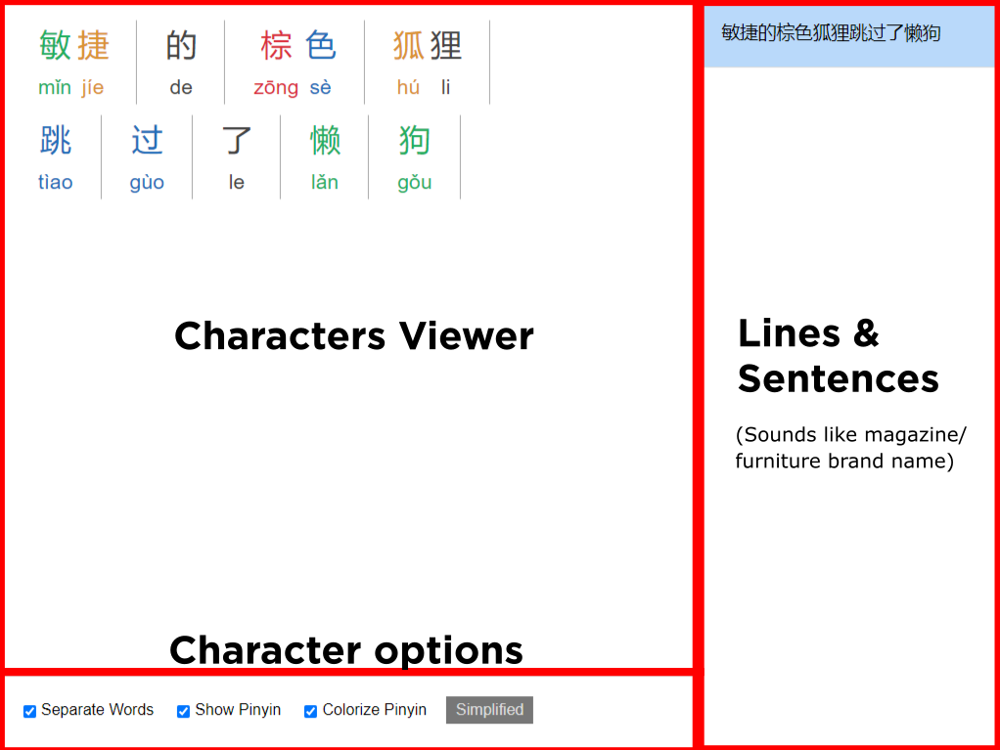

Chinese Reader
Dear test subjects, I am now going to brief you on the steps required in order to install our experimental Oriental Language Parsing Assistant (OLPA) into your computer system. Please follow each steps carefully in order to ensure the software installed correctly.
By installing this software you have consented to surrender all your personal data as well as complete control over your being to Vault-Tec Corporation. Do not be alarmed, we assure you that this is all for your safety, and your well-being is one of our top priority.
jk, I've been playing too much fallout recently lmao. It's ya boi nat don't worry.
Installation
You can hold mouse button to enlarge the images, release to turn it back to normal. I really like this feature.
Also you need to use Chrome, since this is a Chrome Extension.
1. Download the extension
DownloadIt's a ZIP file btw, CRX is for Chrome Webstore only apparently.
2. Extract the zip file
Since you're probably going to use this (I hope) and I might continue to ask you to test this in the future, I recommend you to extract the zip file in a special folder (?) or somewhere you can manage instead of you know, desktop.
3. Go to extension
Remember you can hold mouse button on the image to zoom in.
4. Turn on "Developer mode"
(Sorry, I don't have Adobe so I had to use Paint)
5. Click "Load unpacked"

(I'm sorry if the arrow is not clear enough)
6. Navigate to the folder
Yeah, I used to make original music, but not anymore
Once you're done, refresh this page for the next page. You might have to refresh it more than once depending on how lucky you are (I have 0 confidence in my coding skill).
Congratulations!
As you have noticed, this page does change, and when it does, that means you have successfully installed my totally buggy Chrome extension! Yay!
Now I will teach you how to use it.
Reading Assist
If you are using this extension, that means your (our actually) chinese reading comprehension sucks. But don't worry, this extension exists for that reason. With Reading Assist (temporary name that I come up with as I am writing this), no article is too hard!
To use this feature, first select the text you want to read. Then, a floating button temporarily labeled "HELP ME I CAN'T READ" will appear. Click that button, and the assist window will open. To close: click anywhere outside the window.
Try it on the following text.
As you might expect, there is a small chance of my code not working as intended (actually it's probably chrome's fault for not loading my script but I digress). If you are not seeing a red box appearing near your cursor, refresh the page and it should fix the problem.
Next, we'll discuss what's inside the assist window.
The Assist Window
This should be what you are seeing when you open up the Assist Window. Let's take a look on what each section is.
I think it's pretty clear what each sections do, so I'm just going to explain what interactions you can make with these features.
Characters Viewer
Characters viewer is where you can read the text you need help reading. The way the characters are displayed depends on which training wheels you selected in the options menu, which I will explain after this.
By hovering each words, you can see the meaning of that character.
if a character has multiple meaning/pronunciation, you can see them as a list. You can also select which one is the correct one according to context. Keep in mind that the program won't remember it, since its job is just to throw everything it has on its database to you. Well, for now.
Character Options
Character options acts like training wheels, it helps you read easier. You can turn the options anytime and the program will remember it (hopefully).
Separate words will separate the words. It should group idioms together. Here's how it looks like if it turned off.
Show Pinyin will show or hide pinyin. Here's how it looks like when turned off.
Colorize Pinyin is probably the part that you are not familiar with. It's kind of a standard in chinese dictionary apps to colorize pinyin and characters based on tone.
First tone is red colored.
Second tone is orange colored. Third tone is green colored. Fourth tone is blue colored. Fifth tone is dark grey colored.Or you can just turn it off, like this.
BTW if you turn them all off it's just like a regular text with bigger font size (like children book). Wow, big surprise huh.
Don't worry, you can still peek, I gotchu.
Also don't forget that you can always change character types.
Lines & Sentences
When you select a block of text with multiple lines/sentences, the program will separate them. This is to make sure you read the fewest number of words possible. I know eventually you want to read more at once because you have gotten better, but this is what we have for now. It's a planned feature though, along with font resize option.
You can try selecting the text below and maybe play around with the feature, shouldn't be too hard.
It should look like this if you turn on all the options.
As you can see there will be more stuff going on on the right side. You can click them to view different sentences inside the Characters Viewer.
Floating Dictionary
Let's say you can read chinese text comfortably, but sometimes you find words you don't know. Or maybe you want to practice reading without training wheels, but you can't just suddenly know words that you don't know. I have a little something for you.
Try selecting the text below.
Awesome right?
Final word
Of course you are here because I asked you to test this program (which I already use quite often).
If you found a bug, or something isn't working properly, please tell me along with the site you are using it at and the text you are selecting.
I'm also very open to suggestion because the reason I'm sending out this to be tested is because I'm running out of things to add to this program, but it still feels like I just started. Therefore please tell me whatever you think will be a nice addition to this program.
Also I need to tell you that this test isn't about UI/UX or anything related to design. It's purely for function. Design phase is after the features are set, because to make the UI you have to know the things that you need to consider. Like imagine buying clothes for someone without ever seeing them physically. You have to know their sizes in order to buy something that fit them nicely.
Finally, I have to again, thank you for participating in this test. Sorry that it may litter your computer, you know, with all the files, and for something I'm not sure how far I will have to develop. But I do hope you'll find this useful, or even gain some inspiration out of it.
- nat